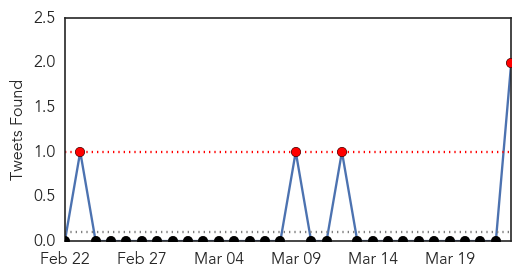

Chikungunya
30-Day Web Trend
0 alerts, 0 warnings

30-Day Twitter Trend
0 alerts, 0 warnings

Article Locations

Article Confidences

Top Articles:
- 1.000
- News Scan for Mar 23, 2015
- 0.999
- Are Viruses on the Rise or Does It Just Seem That Way?
- 0.999
- Chikungunya menace fails to grab attention
- 0.988
- GPs warned of mosquito-borne disease surge
- 0.977
- Plague of mosquitos carrying deadly diseases is headed for Britain, scientists warn
- 0.961
- FERAL DOG PACK kills SOUTH DAKOTAN ~ CANADA reports 21 HUMAN CASES of WEST NILE VIRUS in 2014 ~ CHIKUNGUNYA in MEXICO tops 400 ~ CHIKUNGUNYA in the AMERICAS now at 1.3 million cases and counting ~ MON
- 0.825
- Climate Change Will Bring Insect-Borne Diseases to Britain : HEADLINES : Youth Health Magzine
Top Tweets:
-
No tweets found for Mar 23, 2015
Measles
30-Day Web Trend
0 alerts, 0 warnings

30-Day Twitter Trend
4 alerts, 0 warnings

Article Locations

Article Confidences

Top Articles:
- 0.999
- WHO urges mass vaccination vs measles in Ebola areas
- 0.975
- Minnesota: Vaccine mandates are not in the public interest
- 0.974
- A Public Concern, Not a Personal Choice
- 0.841
- Dana Hills High School
- 0.794
- What happened to MDGs?
- 0.676
- UNICEF reaching children affected by Cyclone Pam on remote Pacific islands - Vanuatu
- 0.656
- Measles outbreak in Berlin cause for concern
- 0.564
- Studies Showing Vaccines Are Safe for Children
- 0.556
- The absolute need to trust medicines
- 0.551
- Quirky Question #256, Mandating vaccines for employees?
Top Tweets:
- 0.554
- The Disneyland measles outbreak has led to 146 cases in 7 US states. Quebec's outbreak ignited by a Disneyland returnee now numbers 144.
- 0.508
- RT: The Disneyland measles outbreak has led to 146 cases in 7 US states. Quebec's outbreak ignited by a Disneyland return…